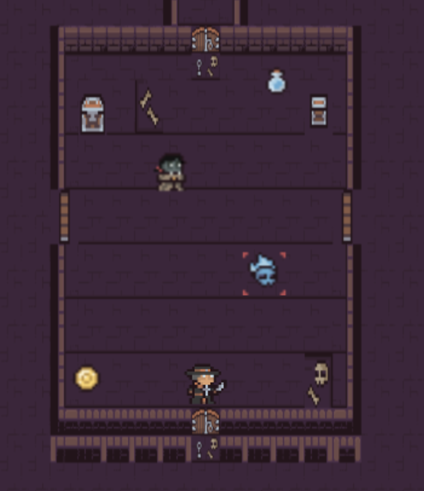

OpenAI Conversational Agent
A robust conversational chatbot developed with Rust and OpenAI API for advanced natural language processing. Built during internship at Hyperbloom with FastAPI backend, React frontend, and Retrieval-Augmented Generation for enhanced response quality.
Learn More!Keepsake: AI-Powered Journaling & AR Scrapbooking
Revolutionary iOS app combining AI-enhanced journaling with augmented reality scrapbooking. Features OpenAI integration for intelligent prompts, RealityKit for immersive 3D photo placement, Multipeer Connectivity for real-time collaboration, Apple Watch integration, and Firebase backend for seamless data management across devices.
Learn More!Cultured: iOS App
An interactive app built with Swift, SwiftUI, Firebase, and ARKit/RealityKit, enabling users to explore and learn about global cultures through engaging modules, games, and augmented reality tours.
Learn More!Nomad: Navigation iOS App
Full-stack iOS application built with Swift and SwiftUI that consolidates all navigation processes into one app. Integrated Generative AI with OpenAI API, Yelp integration, and Firebase backend, featuring dynamic UI with chatbot functionalities for enhanced user experience.
Learn More!

Shadow's Labyrinth: Android Dungeon Crawler
An engaging Android Studio dungeon crawler game leveraging Java for backend logic, XML for UI design, and implemented robust MVVM architecture with design patterns including Strategy, Singleton, Factory, and Decorator for maintainable and scalable code.
Learn More!Better Place Drones: Forest Fire Detection
Contributing to XPRIZE competition with 300+ teams to develop autonomous drones for forest fire fighting. Developing flight control algorithms using Ardupilot Mission Planner and QGroundControl, while contributing to machine learning models for fire detection and spread pattern prediction.
Learn More!
Personal Portfolio Website
A modern, responsive portfolio website showcasing my skills, projects, and experience. Built with HTML5, CSS3, and JavaScript, featuring clean design, smooth animations, mobile optimization, and interactive elements to present my professional work effectively.
View CodeMusic Genre Classifier
A machine learning project using the GTZAN dataset to classify songs into 10 genres. Implemented multiple models including a Neural Network, Support Vector Machine, and Convolutional Neural Network (CNN). The project explored preprocessing, feature extraction (MFCCs, chroma, tempo), and data augmentation, with applications in music recommendation and organization.
View CodeSniper Leaderboard Bot
A Python Slack bot that tracks and visualizes a “Sniper Leaderboard” by
parsing channel messages for snipes, assigning points, and generating
cumulative statistics and scatter-plot visualizations with user profile
images. Built with a modular, package-style architecture using
__init__ files for clean OOP organization. Through this project,
I gained hands-on experience with Slack’s API ecosystem, automated message
processing, and practical Git workflows for multi-file collaboration and
version control.